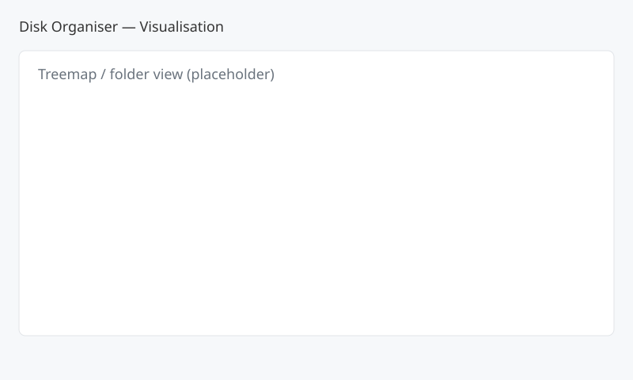
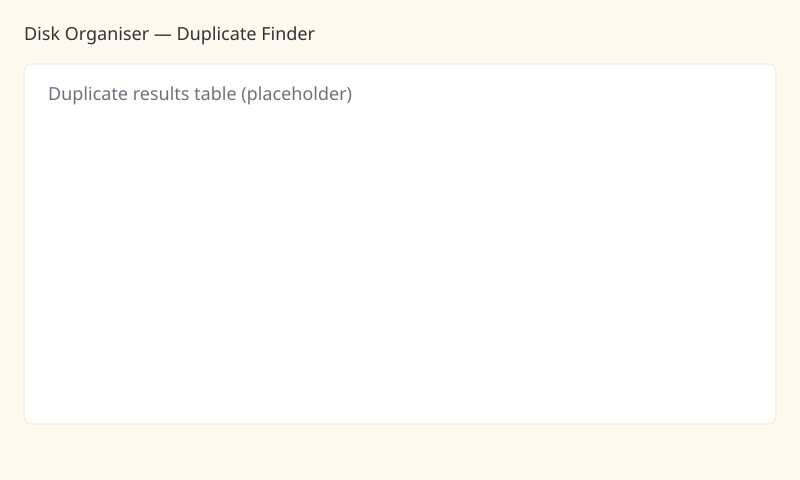

About
Disk Organiser is a small prototype to help users visualise, search and safely reorganise files on their filesystem. Operations create automatic backups so changes can be reviewed or undone.
Screenshots


Quick start
- Download the latest release from the releases page or run from source.
- Start the backend:
python backend/app.py - Open this file in a browser:
frontend/index.html(the UI expects the API athttp://127.0.0.1:5000by default).